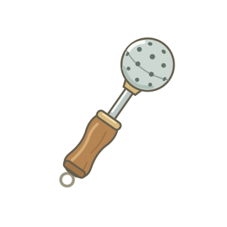
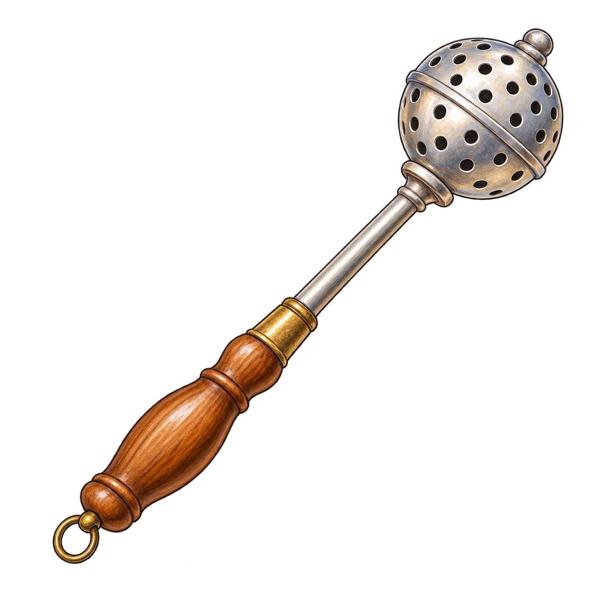
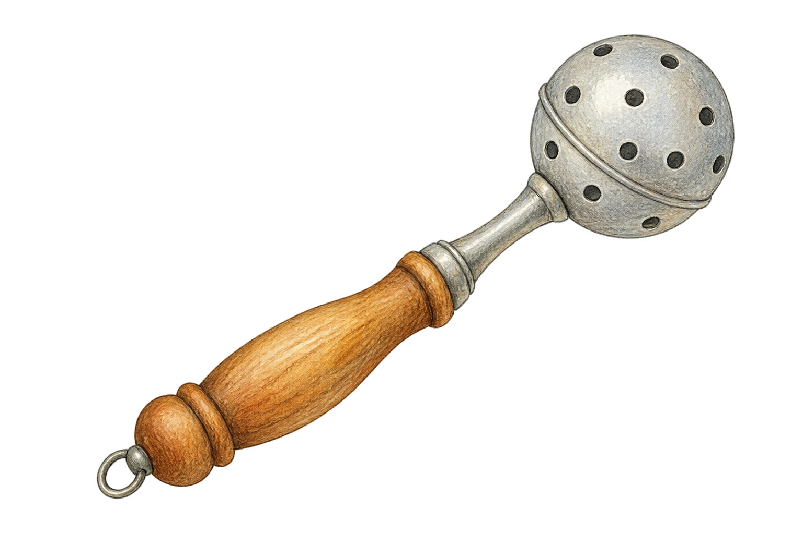

01 / Jednoduchá kresba
Čistý obrys, několik barev a výrazné otvory. Nejblíž současným kresbám v miniHrách.
SVG · vlastní vektor · průhledné pozadíZkouška na kartičce · 100 a 56 px
Tři různé styly stejného předmětu. Samostatný podklad k výběru, bez změn v aplikaci.

Čistý obrys, několik barev a výrazné otvory. Nejblíž současným kresbám v miniHrách.
SVG · vlastní vektor · průhledné pozadíZkouška na kartičce · 100 a 56 px

Výraznější objem, teplé dřevo a lesklý kov. Podrobnější obrázek pro poznávačku nebo slovníček.
PNG · AI ilustrace · průhledné pozadíZkouška na kartičce · 100 a 56 px

Jemnější kontury, tlumené barvy a kreslená textura. Působí jako ilustrace z dětské knížky.
PNG · AI ilustrace · průhledné pozadíZkouška na kartičce · 100 a 56 px
Co vybíráme: styl, který by případně šel použít i pro ostatní předměty. Všechny tři soubory mají skutečně průhledné pozadí; barevné plochy patří pouze tomuto srovnání. PNG vznikly pomocí imagegen, SVG je nakreslené přímo v kódu.